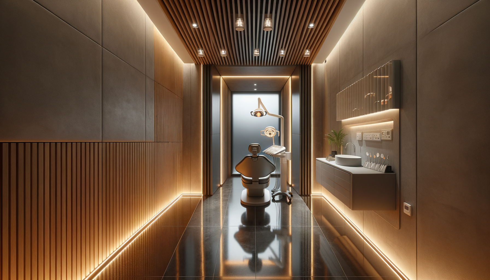

Материалы интерьера
Фирменный стиль SVYATLITSA определяется не графикой, а пространством. Интерьер — это бренд.
Дубовые рейки
Вертикальные рейки от пола до потолка без разрыва. Машинная нарезка, ровный шаг. Натуральный дуб, светлый тон. Основной визуальный элемент.
Микроцемент
Полы и акцентные стены. Светлый полированный — полы (отражающий). Тёмный серый — стены серверной, колонны.
Стекло
Электрохромное smart glass. Прозрачное ↔ матовое. Тонкие чёрные алюминиевые рамки. Раздвижные двери на верхнем рельсе.
Матовая сталь
Рельсы ceiling-down системы. Направляющие KYNOSYS. Раковины. Все механизмы — brushed steel finish.
Бетон
Структурные колонны между стеклянными боксами. Тёмно-серый, необработанный вид. Видимые крепления.
LED-освещение
Только встроенное. 3000K тёплое — рейки, потолок, ниши. 5000K холодное — хирургические лампы. Никаких подвесных ламп, люстр, декоративного света.


Подвесные/декоративные лампы. Петлевые светильники. Обычные распашные двери. Деревянные шкафы на полу. Пластик. Линолеум. Плитка с рисунком. Ковры. Растения в кабинетах (только в зоне ожидания). Мебель IKEA.
Рейки от пола до потолка без разрыва. Отражающий пол. Пустой пол (всё хранение — под потолком). Раздвижные стеклянные двери. Синий LED на AI-камерах. Зелёный LED на замках KYNOSYS.